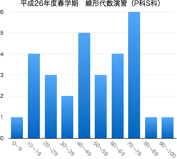

2014年度春学期 線形代数演習 Basic Linear Algebra and Practice
木2限 (10:55-12:35) | 2-276教室 | 対象：ものづくり環境学科1年生 創造システム工学科1年生
担当：佐藤 弘康（hiroyasu [at] nit.ac.jp | W1棟204 | 0480-33-7972）
力学・電磁気学・流体力学など工学とかかわりの深い分野では、現象を表現・解析する手段としてベクトルの知識は欠かせない。また、数学にはベクトルの概念をさらに抽象化したものを扱う線形代数学という分野があり、これも工学へ幅広く応用されている。
数学をはじめとする専門科目をスムーズに理解するために、ベクトルについて学習する。基礎的な計算技法に習熟するとともに、ベクトルを利用した空間図形の考察も行う。
| 第1回 | 4月 | 10日（木） | ガイダンス，ミニクイズ（連立1次方程式の解と直線の交点） |
| 第2回 | 17日（木） | ベクトルの演算（加法） 第1章 §1.1 (p.1-4) | |
| 第3回 | 24日（木） | ベクトルの演算（減法，実数倍） 第1章 §1.1 (p.4-6) ，空間の座標 第1章 §1.2 (p.6,7) | |
| 第4回 | 5月 | 8日（木） | 2点間の距離 第1章 §1.2 (p.7-9) |
| 第5回 | 15日（木） | 内分点・外分点 第1章 §1.2 (p.9, 10) ，空間内のベクトル 第1章 §1.3(p.10, 11) | |
| 第6回 | 22日（木） | ベクトルの基本ベクトル表示 第1章 §1.3(p.11-14) | |
| 第7回 | 29日（木） | ベクトルの成分表示 第1章 §1.3(p.15, 16) | |
| 第8回 | 6月 | 5日（木） | 内積の定義 第1章 §1.4 小テスト（中間試験） 問題 解答 |
| 第9回 | 12日（木） | 内積の性質と成分表示 第1章 §1.4 | |
| 第10回 | 19日（木） | 位置ベクトル 第1章 §2.1 補足 | |
| 第11回 | 26日（木） | 直線の方程式 第1章 §2.2 | |
| 第12回 | 7月 | 3日（木） | 平面の方程式 第1章 §2.3(p.31-34) |
| 第13回 | 10日（木） | 直線と平面の平行性，2平面の平行性と交わり 第1章 §2.3(p.35-40) | |
| 第14回 | 17日（木） | 円と球の方程式 第1章 §2.4 | |
| 24日（木） | 期末試験 (10:40 -- 11:40) |
|  |
|